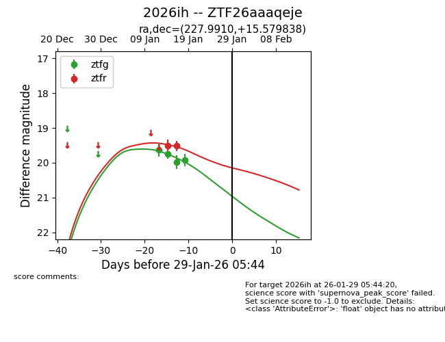
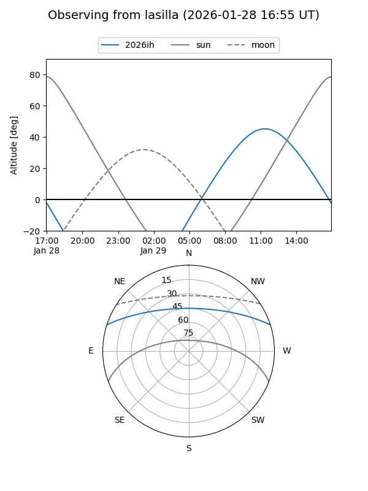
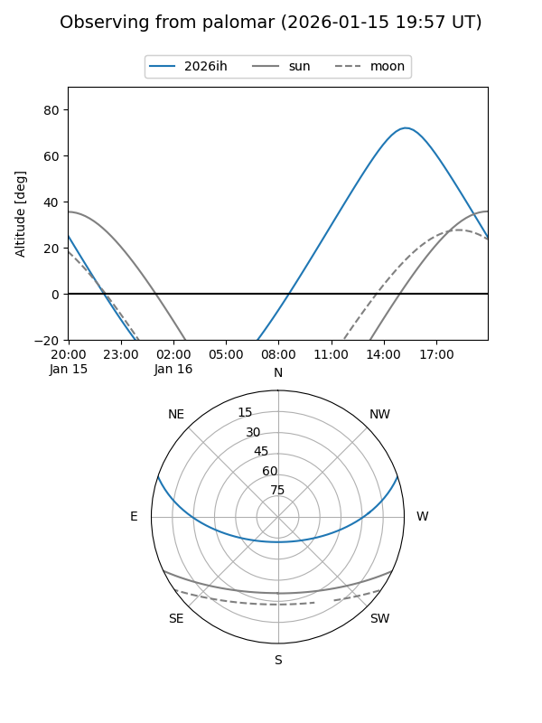
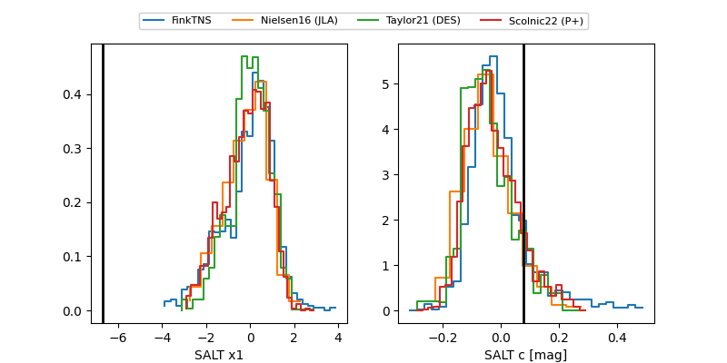

2026ih
Target 2026ih at 2026-01-26 03:06
Aliases and brokers:
FINK: link
Lasair: link
ALeRCE: link
TNS: link
YSE: link
alt names
ZTF26aaaqeje (ztf,fink_ztf)
2026ih (tns,yse)
Coordinates:
equatorial (ra, dec) = 227.9910,+15.57984
equatorial (HMS+DMS) = 15:11:57.83,+15:34:47.42
galactic (l, b) = (20.6987,+55.44550)
Flags:
Photometry:
last ztfg=19.92, ztfr=19.52
4 ztfg, 2 ztfr detections
Lightcurve

Visibility


Additional plots
